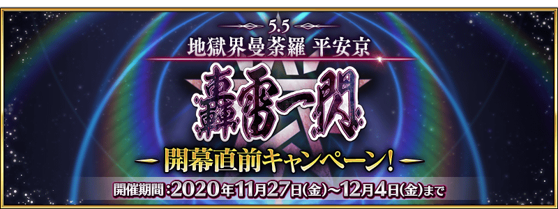
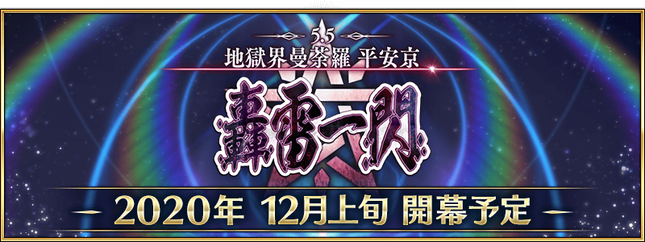

配合預定2020年12月上旬開幕的第2部 第5.5章「地獄界曼荼羅 平安京 轟雷一閃」，舉辦『「地獄界曼荼羅 平安京 轟雷一閃」開幕前夕宣傳活動』！
另外，開放條件為通過第2部 第5章「Lostbelt No.5 星間都市山脈 奧林帕斯 擊落神之日」。
現在舉辦中的「2200萬DL突破宣傳活動」中也實施主線關卡第2部 第5章 奧林帕斯為止的消耗AP變成1/4的宣傳活動。尚未通過主線關卡的御主，請務必活用此機會！
◆宣傳活動舉辦期間◆
2020年11月27日(五) 17:00～12月4日(五) 11:59
◆第2部 第5.5章 開幕預定時期◆
2020年12月上旬
◆第2部 第5.5章 開放條件◆
通過第2部 第5章「Lostbelt No.5 星間都市山脈 奧林帕斯 擊落神之日」後開放。
※不需要通過亞種特異點(從Ⅰ到Ⅳ)。
※在文字冒險部份包含第1.5部「亞種特異點Ⅲ 屍山血河舞台 下總國 英靈剣豪七番勝負」的一部份內容。
注意
第2部 第5.5章的開放不需要通過亞種特異點(從Ⅰ到Ⅳ)，但第2部 第5.5章的物語包含有關亞種特異點Ⅲ的內容劇透一部份。關於尚未通過亞種特異點Ⅲ的遊玩玩家，敬請見諒包含一部份劇透。

下述的期間中，在關卡開始時的支援選擇畫面，選擇其他御主的對象從者做支援情況、其他御主選擇自己的對象從者做支援情況的友情點數獲得量變成2倍。藉此機會入手更多友情點數吧！
◆舉辦期間◆
2020年11月27日(五) 17:00～12月4日(五) 11:59
◆對象從者◆
| 職階 | 稀有度 | 從者名 |
|---|---|---|
| Archer | ★★★★★ | 清少納言 |
| Caster | ★★★★★ | 玉藻前 |
| ★★★★★ | 紫式部 | |
| Assassin | ★★★★★ | 酒吞童子 |
| ★★★★ | 加藤段藏 | |
| Berserker | ★★★★★ | 坂田金時 |
| ★★★★★ | 源賴光 | |
| ★★★★ | 茨木童子 |
※在第2部 第5.5章「地獄界曼荼羅 平安京 轟雷一閃」的主線故事，上述對象從者以外的從者也預定登場。 ※非好友的御主也是友情點數獲得量2倍的對象。 ※請注意NPC從者即使是對象從者也在友情點數獲得量2倍的對象外。
強化「★5(SSR)坂田金時(Berserker)」「★4(SR)加藤段藏」「★4(SR)茨木童子(Berserker)」的特別關卡「從者強化關卡」，在迦勒底之門永久追加。
不僅進行對象從者的強化，也可獲得聖晶石做為關卡通過報酬。
※從者強化關卡請注意在沒有文字冒險部份。
◆追加時間◆
2020年11月27日(五) 17:00～
◆開放條件◆
持有的強化對象從者，必須使其最終再臨。
※未持有對象從者的話，不會出現關卡。
※關卡沒有舉辦期限。
其他還有，期間限定『「地獄界曼荼羅 平安京 轟雷一閃」開幕前夕Pick Up召喚(每日交替)』同時舉辦！
另外，第2部 第5.5章「地獄界曼荼羅 平安京 轟雷一閃」也開幕預定！
關於詳情，請自下述橫幅確認。
■「地獄界曼荼羅 平安京 轟雷一閃」開幕前夕Pick Up召喚(每日交替)詳細情報
■第2部 第5.5章「地獄界曼荼羅 平安京 轟雷一閃」詳細情報 